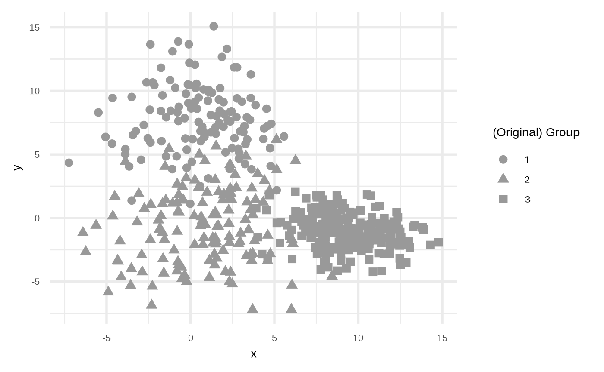
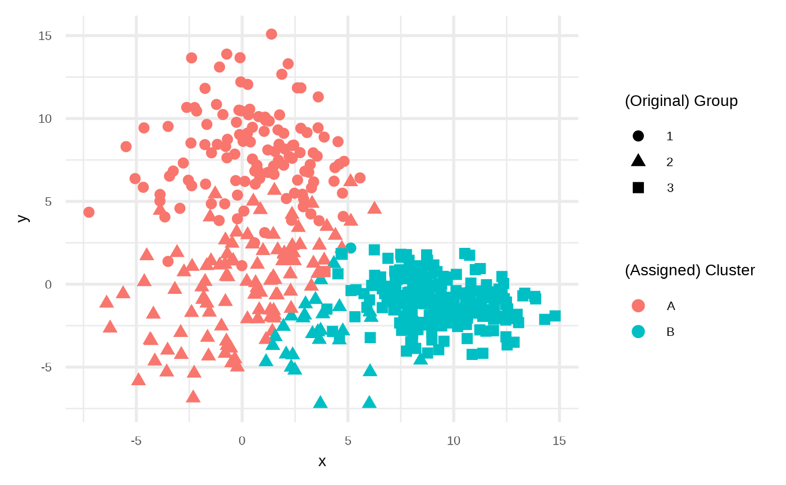
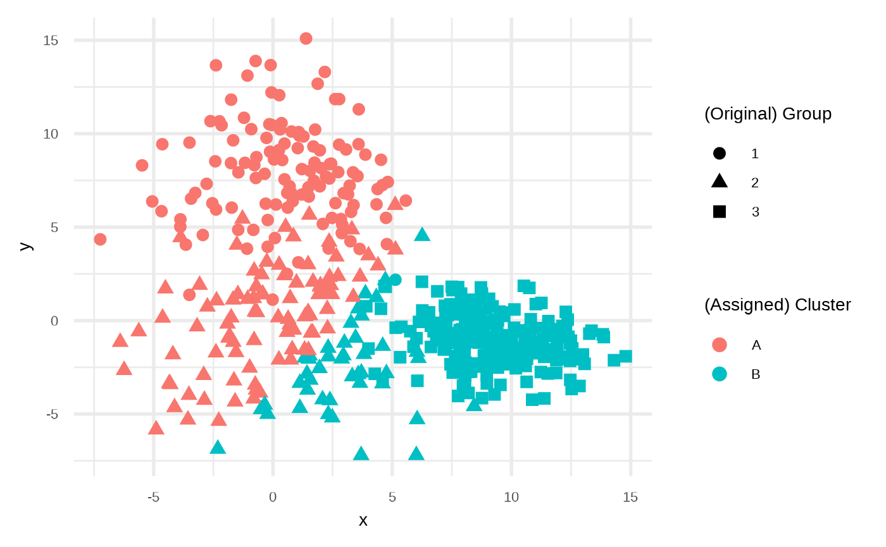
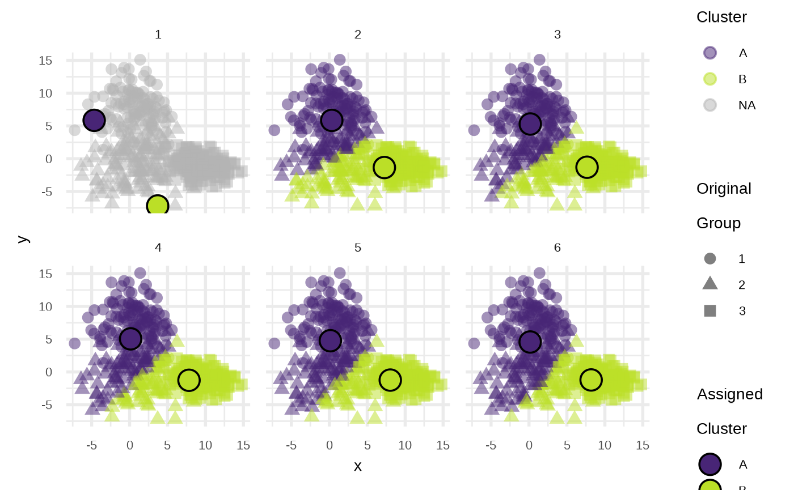

Generating data set
The main function is sim_groups, you need to define:
- A number of observations to draw.
- A number of groups to sample.
- An optional argument to define the proportion of each group.
library(klassets)
set.seed(123)
df <- sim_groups(n = 500, groups = 3)
plot(df)
Fit cluster algorithms
K-means stats::kmeans
You can apply the stats::kmeans using
fit_statskmeans_clust.
dfc1 <- fit_statskmeans(df, centers = 2)
plot(dfc1)
K-means: Basic {klassets} implementation
Or use a basic K-means implementation with:
set.seed(234)
dfc2 <- fit_kmeans(df, centers = 2, max_iteration = 6)
plot(dfc2)
What is the benefit? In the second one use a helper function
kmeans_iterations to keep the iteration and see how the
algorithm converges.
set.seed(234)
kmi <- kmeans_iterations(df, centers = 2, max_iteration = 6)
plot(kmi)
Now we can use gganimate package using object result
from kmeans_iterations due have the classification for
every point in every step:
kmi
#> $points
#> # A tibble: 2,988 × 6
#> iteration id group x y cluster
#> <int> <int> <chr> <dbl> <dbl> <fct>
#> 1 1 1 1 4.53 8.60 NA
#> 2 1 2 1 5.57 6.42 NA
#> 3 1 3 1 2.62 6.28 NA
#> 4 1 4 1 4.82 7.41 NA
#> 5 1 5 1 0.583 2.50 NA
#> 6 1 6 1 -5.49 8.30 NA
#> 7 1 7 1 3.59 9.44 NA
#> 8 1 8 1 -0.224 3.95 NA
#> 9 1 9 1 -2.62 10.7 NA
#> 10 1 10 1 -0.695 8.74 NA
#> # ℹ 2,978 more rows
#>
#> $centers
#> # A tibble: 12 × 4
#> iteration cluster cx cy
#> <int> <fct> <dbl> <dbl>
#> 1 1 A -4.67 5.85
#> 2 1 B 3.70 -7.21
#> 3 2 A 0.327 5.85
#> 4 2 B 7.26 -1.35
#> 5 3 A 0.170 5.29
#> 6 3 B 7.65 -1.30
#> 7 4 A 0.132 5.05
#> 8 4 B 7.83 -1.27
#> 9 5 A 0.137 4.76
#> 10 5 B 8.04 -1.24
#> 11 6 A 0.155 4.57
#> 12 6 B 8.19 -1.22
#>
#> attr(,"class")
#> [1] "klassets_kmiterations" "list"So you can take the output of this function data and use
gganimate to make the animation using in the
klassets home page. The code used in that animation can be
found in the package using:
system.file("animation_kmeans_iterations.R", package = "klassets")
#> [1] "/home/runner/work/_temp/Library/klassets/animation_kmeans_iterations.R"